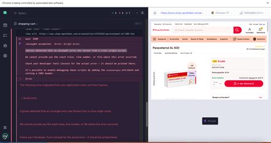

- The user is redirected to the items details screen instead of the home page when clicking on the button for continuing shopping.
a. Finding type:
UX/Workflow defect.
b. Frequency of Occurrence:
Always
c. Severity:
- medium
d. Steps:
- Navigate to the “Shop Apotheke” home page.
- Select any item & click on it to go to its details screen.
- Click on add to shopping cart.
- In the success screen click on the button to continue shopping.
e. Actual result:
The user is redirected to the details screen for the product that was just added to the shopping cart.
f. Expected result
As a user, I prefer to be redirected to the home page again as “continue shopping” mean that I want to select different product & add it my shopping cart (unless it was a user request to work this way)
- Although the (data-qa-id) makes the life of a software tester easier, in my personal opinion it will be better to use the staging/testing environment only & remove it on production.
a. Finding type:
Recommendation.
b. Frequency of Occurrence:
Always
c. Severity:
- low
- It was repeated several times to interrupt the script execution due (Uncaught exception) errors
a. Finding type:
Defect.
b. Frequency of Occurrence:
Random
c. Severity:
- Medium
